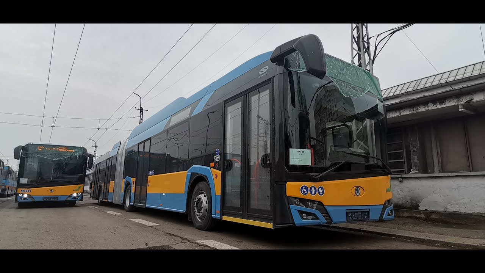
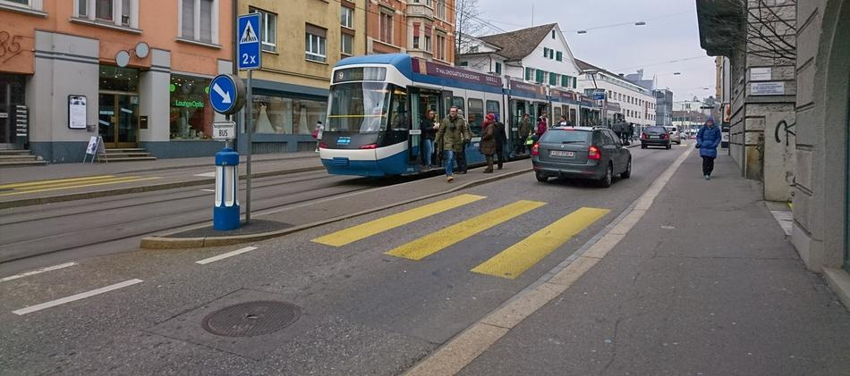

Първоначално в инфраструктурата на София са били предвидени "въздушни коридори", които да проветряват въздуха в града, тъй като това е нужно за градовете, разположени в котловини. Със започването на масовото застрояване на София в последните 20-30 години обаче тези коридори започват да се застрояват и в момента единствените останали са тези по реките в града.
Във връзка с проект „Изпълнение на дейности за подобряване качеството на атмосферния въздух в Столична община чрез закупуване и доставка на електрически превозни средства за шосеен транспорт – електрически автобуси и тролейбуси“ по Оперативна програма “Околна среда 2014 – 2020 г.” на 9-ти март (вторник) в тролейбусно депо "Надежда" бяха доставени 3 от общо 30 нови нископодови съчленени тролейбуса Skoda Solaris. Очаква се да бъдат пуснати в експлоатация до около 20.03 по линии 1, 6, 7 и 9.


Това е снимка на типична за Цюрих улица. В час пик, по лентата за автомобили преминават 400 коли, в които се движат 500 души. С трамвая за час се превозват примерно 3500 души. И така, нищо че на пръв поглед трамвайните линии изглеждат пусти и неефективни, с числата всичко е на обратно: трамваите вършат голяма работа като извозват 7 пъти повече хора, отколкото автомобилите и с лекота могат да извозят още толкова. А все още не сме разгледали екологичните и икономическите преимущества на обществения транспорт пред автомобилния. Сега нека преминем към „традиционните“ транспортни инженери, чийто правила гласят, че трябва да се направи нещо за облекчаване на болката на хората в автомобилите. Какво може да се направи? Като начало да се отнеме предимството на трамвая на улицата и на кръстовищата. И да се добави по още една лента в двете страни. А освен това да се направи и лента за обръщане на кръстовищата, тогава ще има място за преминаването на около 700-800 автомобила в час. Може да напишете в отчета си: “Готово! Нивото на обслужване се повиши! Все още не е идеално, но е по-добро от преди!“Но така инженерите забравят за около 3500 души, които са в трамвая (и още хиляди пешеходци и велосипедисти). Колко от тях ще продължат да се придвижват с трамвая, който заради автомобилите ще се движи все по-бавно и все по-малко надеждно? Какво ще стане ако 1000 души от тях се качат на автомобилите или на Юбер, което още повече ще влоши положението на трамвая? Не забравяйте: това е богат град и хората имат избор. И така ще се върнем в началото. Какво ще правим по-нататък? Картината не е приятна: трамваят ще се нуждае от повече субсидии и ще предлага по-некачествената услуга, а ние няма да сме подобрили ситуацията за автомобилите, тъй като ще сме добавили стотици ежедневни пътувания по улиците. Разбира се, може да се премине и към по-радикални мерки, като премахване на сгради за разширяване на пътното платно. Това ще ни доведе до това, че с бързото ни придвижване до предградията ще подкопаем икономиката на града, тъй като няма да искаме да прекараме повече време в него. Със загубата на малките местни магазинчета, на жителите ще им се наложи да пътуват до някъде за продукти, което ще изкара още повече коли на улицата.